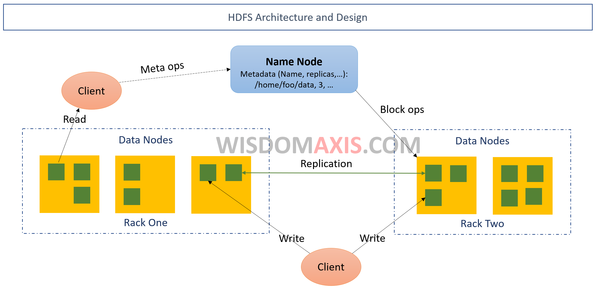

Unit 3.
- 3.1 Purpose of Scheduling
- 3.2 Types of Scheduling Algorithm
- 3.2.1 Linear Scheduling ( FCFS, SJF, Priority Based)
- 3.2.2 Distributed Scheduling ( Max-Min, Min-Min )
- 3.3 Introduction to Cloud Simulator
3.1 Purpose Scheduling
- In computing, scheduling is the method by which process manager handles the removal of a running/finished process from CPU and selection of another process based on a parituclar scheduling algorithm.
- A scheduler may aim at one or more of many goals such as:
- Allowing multiple users to share the system resource effectively
- Keep all computer resource bysu, as in load balancing
- Maximizing throughput (total amount of work completed in unit time)
- Minimizing wait time ( time from work becoming ready untill first point it begins execution)
- Minimizing latency or response time (time from becoming ready to first response)
- Maximizing Fairness (Sharing time between process according to workload)
- Avoiding deadlock when sharing the CPU resources between process
3.2 Types of Scheduling Algorithm
- Linear (Tradition) Scheduling algorithm : FCFS, SJF, RR, Priority Scheduling
- Distributed Scheduling algorithm
3.2.1 Linear Scheduling Algorithm
3.2.2 Distributed Scheduling Algorithm
- These algorithm helps to schedule the clould services on cloud environment
- Generally cloud scheduling probelms as NP-Hard problems which cannot be solved using Linear Scheduling algorithm, that is why distributed algorithms are used to scheduling cloud services.
- Some exapmle of distributes scheduling algorithm are: Max-Min algorithm, Min-Min algorithm etc.
3.3 Introduction to Cloud Simulator
3.3.1 Cloud Simulator
- A cloud simulator helps in modelling various kinds of cloud applications by creating virtual data centers, virtual hosts, VMs, cloudlets that can be configured easily.
- It provides real-time and real-world evaluation of the cloud services inside a programm, so that cost effective and practical cloud services can be developed and analyzed easily.
3.3.2 Benifits of cloud simulators
- Minimal Cost: Purchasing software costs less when compared to purchasing hardware and proprietary software (operating systems, hypervisor etc). Also many simulators are available free of cost.
- Repeatable and Controllable: We can test our experimental set up (simulation) as many times as we want until we get the desirable output.
- Environment: A simulator provides environment for evaluation of various scenarios under different workloads.
3.3.3 CloudSim
- CloudSim is a cloud simulation tool for modeling and simulation of cloud computing infrastructures and services.
- CloudSim is the most popular simulation tool available for cloud computing environment.
- It is an event driven simulator built up on the core of grid simulator GridSim.
- Base programming language for CloudSim is Java and that is why CloudSim modules are easy to extend.
3.3.3.1 Features of CloudSim
- Support modeling and simulation of large scale computing environment.
- Supports simulation of both single and inter-networked cloud (federation of clouds)
- Flexibility to switch between space shared and time shared allocation of processing cores to virtualized services.
- Support for simulation of network connections among the simulated system elements
- Avalability of virtualization engine allows creation of multiple and independent co-hosted virtual cloud services on a data center node.

3.3.4 HDFS ( Hadoop Distributed File System)
- HDFS stands for Hadoop Distributed File System, developed on the basis of distributed file design.
- HDFS is a unique design that provides storage for extremely large files with streaming data access pattern and it runs on commodity hardware.
- It holds large amount of data and provides easier access to the data.
- It is higly fault tolerant and the files are stored in redundant fashion so that data recovery can be easier in case of any failure.
3.3.5 Feature of HDFS:
- It is suitable for the distributed storage and & processing.
- It provides a command line tool to interact with HDFS.
- Allows streaming access to to file system and data.
- It has various file premission and authentication functionality.
- It has high throughput.
HDFS are highly fault tolerant.

Components of HDF Architecture
- DataNode
- NameNode
- Client Node
DataNode
- Containes structured or unstructured data
- Stores the matadata.
- Replication is also done by datanodes
NameNode
- It executes file system to provide services to client
- It is the primary entity which supports the communication between client and data node
ClientNode
- It is the node which writes or requests the data from HDFS file system.